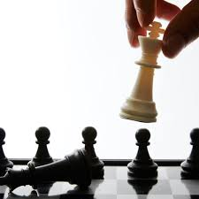
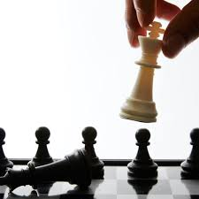

- I have always loved to listen to music and that passion of mine has been growing a lot over the past two years.
- I like anything that requires strategy such as chess and sudoku because they make me think.
 

- I also like coding as it is similar to problem solving.
- I also like taking cool pictures and posting them on my Instagram account.
- I love technology and especially smart home technology and Apple products.
List of products I own
| Smart home products I own | Apple products I own |
|---|---|
| ~6 Smart plugs | iPad Pro |
| Apple Tv | Apple Tv |
| 4 Chromecasts | MacBook Pro |
| Dyson smart fan | iPhone 11 pro max |
| Hue light bulbs | Apple Watch |
| Nano leaf light panels | Airpods Pro |
| ~10 Google Homes | iPod Touch |
William's chess ratings (as of December 11th 2020 on Lichess.org)(points):
- Bullet: 1386
- Blitz: 1498
- Rapid: 1686
- Classical: 1608